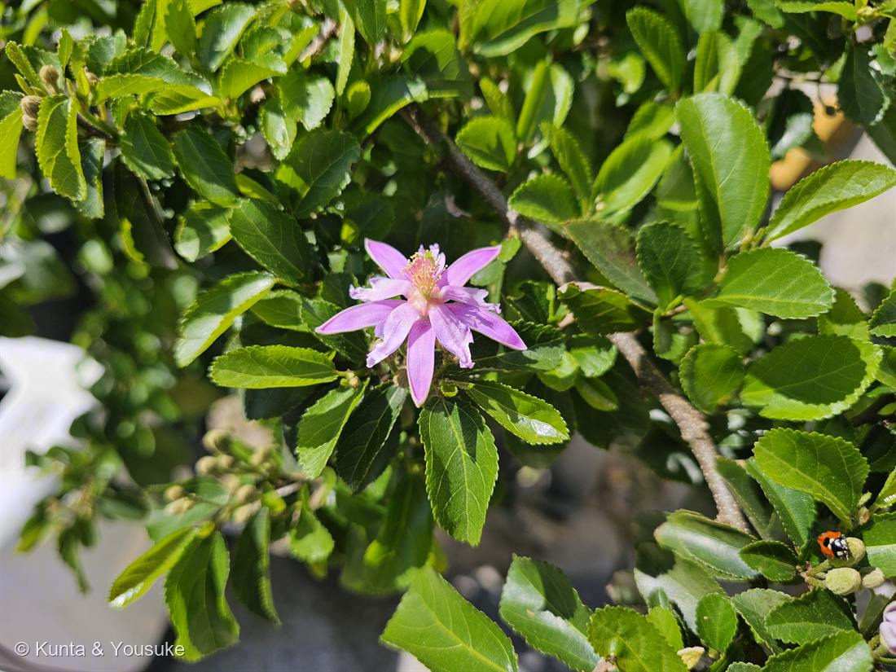

地図を読み込んでいるよ…
🔍 写真も地図も、押しているあいだ拡大して見られるよ（スマホは指を置いてすこし待ってね）。
🌍 の地図＝この子がもともと自生している場所を緑に。南部アフリカ。
⚠出典は「南部アフリカ」としか言っていないので、地図は南アフリカ共和国だけを塗った。ほんとうはもう少しまわりにも広がっているかもしれない。
⚠ 地図は国（日本と中国だけ県・省）までしか塗れないから、ほんとうの分布より広く見えていることがあるよ。地図はだいたいの場所。正確なところは、上の文を見てね。
スイレンボク
Grewia occidentalis L.
別名 · ラベンダースターフラワー（流通名）／フォーコーナーズ・クロスベリー
アオイ科 · Malvaceae（旧シナノキ科 Tiliaceae）
名前と学名の由来
- Grewia（グレウィア）＝イギリスの植物学者 Nehemiah Grew（ネヘミア・グルー、1641〜1712）にちなむ。植物を顕微鏡で解剖して調べた先駆者で「植物解剖学の父」と呼ばれる人。リンネが献名した。
- occidentalis（オッキデンタリス）＝ラテン語で「西の・西方の」。原産は南部アフリカなので、この小名が何の“西”を指すのかははっきりしないが、名前の意味としては「西の」。
この植物のこと
- アオイ科（旧シナノキ科）の常緑〜半常緑の低木。南部アフリカ原産。枝をつるのように伸ばして茂る。暖かい地域で庭木・鉢物・盆栽にされ、旅先の植栽で出会うことも多い。
- 葉はつやのある卵形で、ふちに細かい鋸歯（きょし＝ギザギザ）。付け根から3本の葉脈が出るのが特徴。
- この星形は「萼も花弁のように色づく」花。花弁は5枚だが、それとは別に萼も5枚とも同じピンク色に色づく（花弁化した萼＝petaloid calyx）。細長くのびた星のすじが萼、その内側の少し短いのが本当の花弁（付け根に小さな蜜腺をもつ）。5＋5で10本のすじの星に見える。
- 中心に黄色い雄しべがたくさん集まる。花期は春〜夏と長い。
- 果実は光沢のある4つに分かれた形（4室の核果）で、英名「フォーコーナーズ（四つ角）」「クロスベリー」の由来。熟すと食べられる。
- 和名スイレンボク（睡蓮木）は、星形の花の姿を睡蓮（スイレン）に見立てた名と言われる。
- 花弁とがくは5枚ずつ（5数性）だが、めしべ（心皮）の数はそれと合わない。めしべは1本で、その子房は2〜4室（多くは4室＝約4枚の心皮が合わさったもの）、花柱の先の柱頭も4つに分かれることが多い。この「4」が、4つに割れる果実（フォーコーナーズ）になる。がく・花弁の数（5）と、心皮・果実の数（4）は別々に決まっていて、必ずしも一致しない。
- 写真の右下すみに、テントウムシが遊びに来ている。